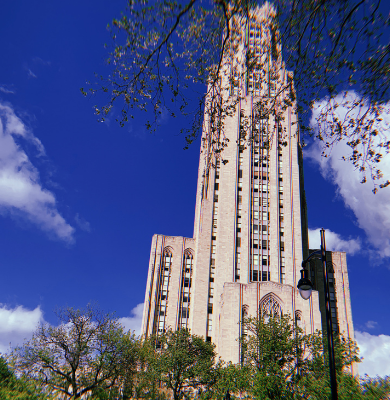

Mary Rose O'Donnell
Writer & content strategist — West Chester, PA
I'm a writer and content strategist with a background that blends storytelling, digital communications, and social media. I graduated from the University of Pittsburgh's School of Computing and Information with a B.S. in Information Science and a concentration in Digital Narrative & Interactive Design, focused on nonfiction writing.
Since then I've written, edited, and produced content across journalism, marketing communications, and social media — work that required getting a story right and telling it well, whether that meant a 900-word feature, a week of live event coverage, or a monthly newsletter. This site collects a selection of that work.
I'm currently looking for content and marketing roles where I can put that same mix of writing and strategy to work. The best place to see my full professional background is my LinkedIn profile.
